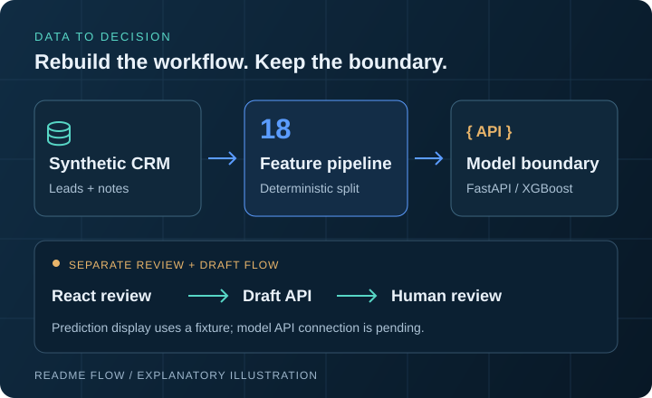
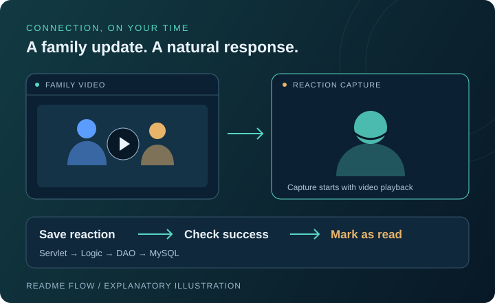
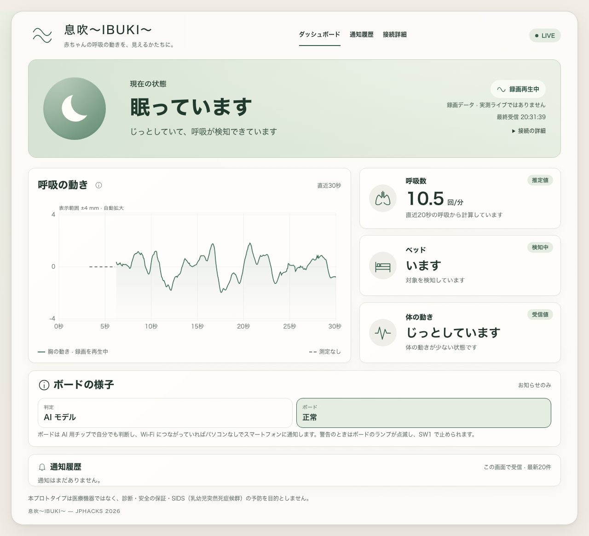
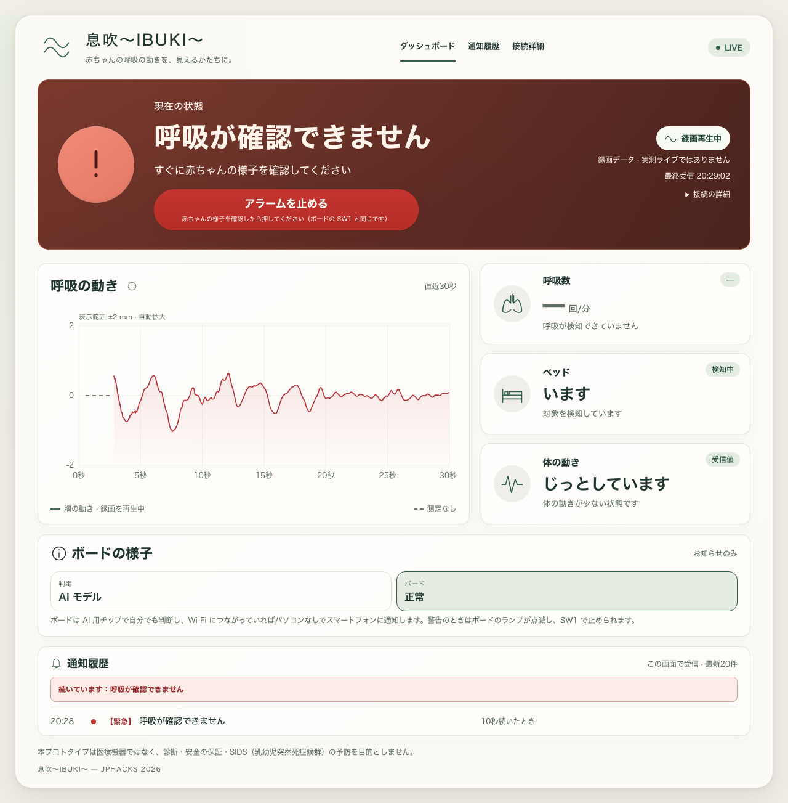
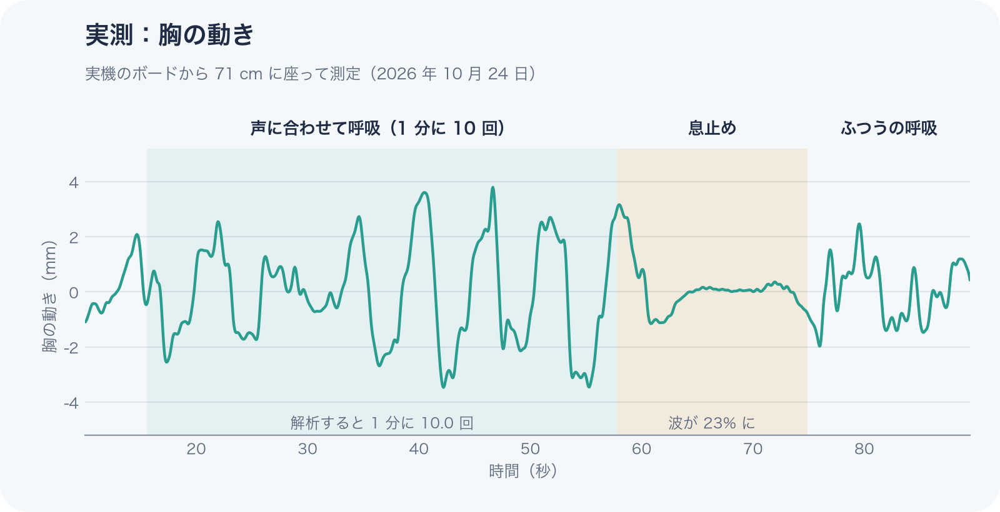

- MY ROLE
- Dashboard, Windows launcher and alarm, offline data analysis.
- TECHNICAL PROBLEM
- Make sensor states, startup and recorded radar data easier to inspect.
- IMPLEMENTATION
- WebSocket state UI, native audio, quality checks and Parquet / HTML reports.
- VERIFIED OUTCOME
- Hiroshima Audience Award (team); Windows and data work traceable in public PRs.
SOFTWARE ENGINEER · BASED IN JAPAN2026
Hello, I'm Taegwan Hong.
Engineering
what matters.
Backend engineering with a focus on architecture, data pipelines, real-time systems, and reliability. I turn hands-on work—from enterprise software to AI prototypes—into tested, understandable systems.
+
IN SIGNAL, FIND MEANING.
SIGNAL DETECTED60 GHz RADAR
LIVE / SENSOR
01Professional engineering role
04Selected public projects
2026JPHACKS Audience Award
SCROLL TO EXPLORE
01 /ABOUT ME
A builder at heart.
A systems thinker by choice.
I'm a backend-focused software engineer in Japan. I care about why a system is designed a certain way, how its data flows, and what happens when things fail.
My public work covers real-time WebSocket states, reproducible radar-data analysis, backend APIs, and team-built products. I learn by making small, reviewable changes, measuring their behavior, and writing tests before claiming improvement.
See the engineering trail on GitHub↗01↗
Backend & architecture
C#/.NET, Java, TypeScript, SQL, clean boundaries, persistence, and testing.
02↗
Data & reliability
Python data pipelines, quality checks, Parquet schemas, signal analysis, and reproducible evaluation.
03↗
Real-time product systems
React, TypeScript, WebSocket connection states, alarms, and clear feedback for users.
WORKING WITH
02 /SELECTED WORK
Ideas, engineered.
A few things I've helped bring to life—each with a different problem worth solving.
02 / APPLIED ML · RECONSTRUCTION

AI Lead Conversion
A privacy-safe CRM reconstruction with synthetic data and a human-reviewed draft workflow.
PythonFastAPIXGBoost
- MY ROLE
- Independent reconstruction across data, modeling, API and review UI.
- TECHNICAL PROBLEM
- Rebuild the historical workflow without exposing private CRM records.
- IMPLEMENTATION
- 18-feature pipeline, XGBoost / Random Forest, FastAPI and outreach drafts.
- VERIFIED OUTCOME
- Prediction and draft endpoints implemented; API contract tests cover invalid input.
03 / SOCIAL DINING · TEAM BUILD
Let Eat Go
A social dining platform built with separate web, backend API and AI services.
Next.jsNestJSTypeScript
- MY ROLE
- Backend contributor: entities, authentication and album features.
- TECHNICAL PROBLEM
- Keep user, chat-room and image relationships consistent across the API.
- IMPLEMENTATION
- Entity relations, album backend, Comment DTO fixes and S3 deletion behavior.
- VERIFIED OUTCOME
- These contributions are attributed in the API README and public commit history.
04 / FAMILY COMMUNICATION · TEAM BUILD

Tsunagaroom
Asynchronous video communication that connects older adults and their families.
Java 21Jakarta ServletJSP
- MY ROLE
- System / interaction design and parts of recording and upload behavior.
- TECHNICAL PROBLEM
- Link video playback, reaction capture and unread / read state in a simple flow.
- IMPLEMENTATION
- Servlet → Logic → DAO structure, reaction storage and watched-state updates.
- VERIFIED OUTCOME
- The source saves a reaction before updating the watched video’s read status.
03 /ENGINEERING EVIDENCE
Beyond the demo.
Actual artifacts from IBUKI: where real-time interfaces, signal processing, and reliability meet.

01 / REAL UIMonitoring dashboardRecorded data playback, not a live infant-monitoring claim.
02 / USER EXPERIENCEAlarm & recovery statesA clear response flow, with Windows-native alarm playback.
03 / MEASURED DATASignal analysisAdult-test breathing signal; not medical validation.01 /
Real-time state, made legible
React and WebSocket interfaces that distinguish connecting, stale, and disconnected states.
PR #77 ↗02 /
Data you can inspect
Offline radar parsing, quality checks, Parquet export, STFT views, and shareable reports.
PR #112 ↗03 /
Explain the invisible
2D Radar Explorer and conceptual 3D crib scenes to make sensing behavior understandable.
PR #119 ↗Engineering artifacts are from the JPHACKS team prototype. Tests documented in the repository were conducted on adults, not infants. IBUKI is not a medical device.
04 /THE JOURNEY
Always building.
Always learning.
A path shaped by team projects, hands-on engineering, and learning in new environments.
“
Build. Find a limitation. Understand. Improve. Test. Review. Repeat.
2026 — PRESENT
Software Engineer · TIS West Japan
Working on enterprise software with C#/.NET and web technologies, developing practical experience in system design and performance improvement. Client details are intentionally omitted.
PROFESSIONAL EXPERIENCEOCTOBER 2026
JPHACKS 2026 · Hack Day Audience Award
Our IBUKI team received the Hiroshima venue Audience Award. I contributed to user-facing dashboards and the Windows launch/alarm experience.
TEAM ACHIEVEMENT2026 — 2028 (EXPECTED)
Bachelor’s studies · AI Engineering
Korea National Open University, Prime College · Division of Advanced Engineering (AI). Currently enrolled; expected graduation February 2028.
EDUCATION IN PROGRESSFEBRUARY 2026
Associate Degree of Engineering
Yeungjin College · Division of Computer Information (Cloud / Japan IT). Micro Degree in AI + Japan IT.
EDUCATIONEARLIER EXPERIENCES
Learning beyond borders
AI training in Germany, an international internship in Uzbekistan, and cultural experience across Japan, Korea, and Europe.
INTERNATIONAL EXPERIENCE05 /PERSPECTIVE
Rooted in engineering.
Open to the world.
From software engineering in Japan to AI training in Germany, each new setting has taught me to communicate, adapt, and solve unfamiliar problems. I'm building toward teams where deep technical work meets global collaboration.
LANGUAGES한국어 · Native / 日本語 · JLPT N1 / English · B2
WORK & LEARNING ACROSS BORDERS
01 / Japan
Enterprise software engineering · 2026–present
02 / Germany
One-month intensive AI training and team hackathon · Ulm
03 / Uzbekistan
One-week international internship · cross-cultural work
04 / Romania
One-month independent stay · language and daily life
06 /GET IN TOUCH
OPEN TO MEANINGFUL CONVERSATIONS
Let's build
what's next.
Interested in engineering, thoughtful products, or cross-border collaboration? I'd love to connect.
Connect on GitHub